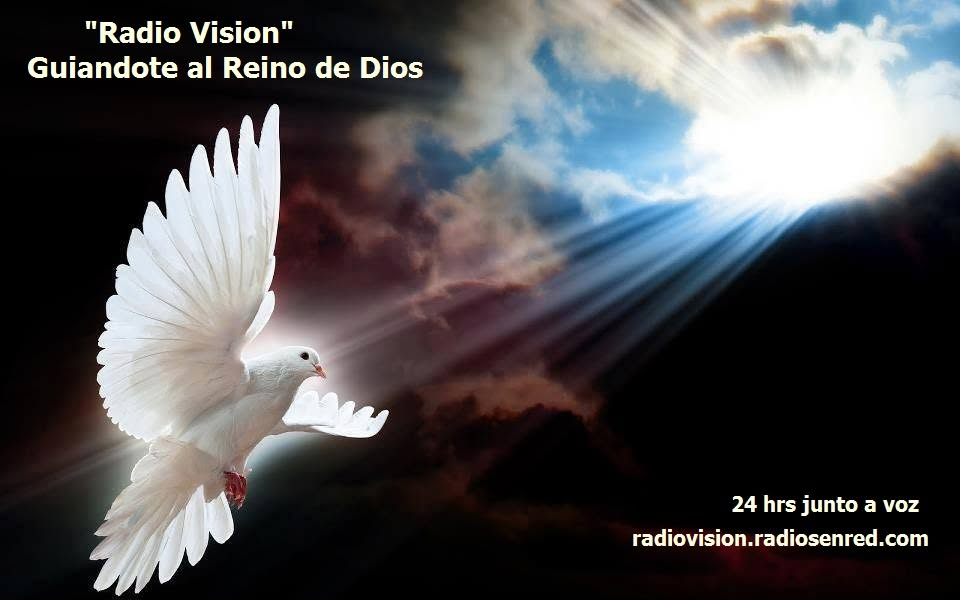

Escuchando en Vivo
Chat de Oyentes
Nuestra Programación
Cristo en el Hogar
Conducción: Pastora Luisa Gonzalez y Pastor Leonardo Caceres
Un programa en el cual queremos acercarte información local, nacional e internacional.
Segmentos:
- 📰 Lectura de titulares.
- 🍲 La Receta.
- 💡 Consejos prácticos.
- 📖 Reflexión en la Palabra.
Visión de Reino
Conducción: Pastor Leonardo Caceres
Un programa de estudio de la palabra, en el cual te invitamos a profundizar más en ella. Entendiendo que tenemos una vida que Dios quiere que vivamos sabiendo de su amor y día a día buscando que nuestros pasos sean guiados por Él.
¡Te invitamos a interiorizarnos juntos!
Nuestro Canal
Radiovisión El Bolsón
Reviví nuestras transmisiones, los estudios de "Con Visión de Reino" y no te pierdas ningún mensaje.